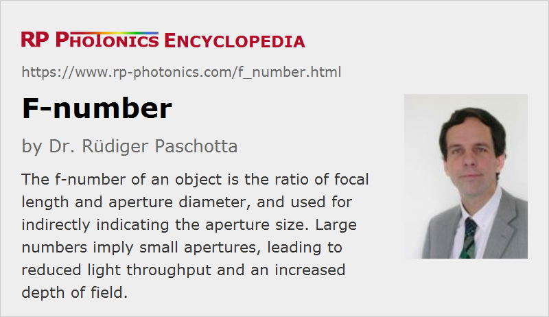

f-number
Definition: a measure for the open aperture of a photographic objective
Alternative terms: f-stop number, focal ratio, f-ratio
German: Blendenzahl
Categories: general optics, vision, displays and imaging
How to cite the article; suggest additional literature
Author: Dr. Rüdiger Paschotta
Most photographic objectives contain a diaphragm (an optical aperture) of variable diameter. It is common not to directly specify the used aperture diameter, but instead the f-number. This is defined as the ratio of focal length and the diameter of the entrance pupil. Specifications are often done in the format f/N, where N is the f-number. For example, f/5.6 means that the entrance pupil diameter is the focal length divided by 5.6. The notation f/# is also common.
The entrance pupil is the aperture stop as seen from the object side. It may not be identical to the physical aperture if there are lenses between the entrance and the aperture.
Note that large f-numbers correspond to small aperture diameters, which however also depend on the focal length.
Generally, the term lens speed is often used in the context of photographic objectives. Lenses with low f-number, which therefore allow for relatively short exposure times, are often called fast lenses, while those with high f-number are slow. The lens speed usually refers to the minimum possible f-number of an objective.
f-number and Ray Angle; Working f-number
The f-number of a lens is directly related to the maximum angles of output rays as obtained for parallel input rays: the tangent of that maximum angle is half the inverse f-number.
When imaging an object which is not at infinity, the output ray angles are smaller. One can define the working f-number based on that for given imaging conditions; it is correspondingly larger than the f-number.
f-number Values of Photographic Objectives
Normally, the f-number of a photographic objective can be changed in certain steps, with typical values like 2, 2.8, 4, 5.6, 8, 11, 16 and 22, progressing roughly such that each step (“going up one stop”) reduces the aperture area by a factor of 2, which has two consequences:
- The light throughput and thus the image brightness is reduced to one half.
- The smaller aperture increases the depth of field (but generally not by a factor of 2).
- The influence of optical aberrations on the image quality is reduced. For very small spots, however, diffraction may start to limit the image resolution.
Some objectives offer only relatively large f-number values, because image aberrations could not be properly compensated for lower values. Unfortunately, that limits their light gathering power, which for distant objects is determined by the f-number. Particularly for close objects, the light gathering power can be reduced substantially. That aspect is relevant for macro photography, where exposure times have to be increased accordingly.
For photography of small objects over short distances with a substantial magnification (macro photography), the image brightness is substantially lower than one might expect from the f-number. It depends on the working f-number, which is larger (see above).
For astronomical telescopes, the same kind of numbers is usually called the focal ratio or f-ratio.
Questions and Comments from Users
Here you can submit questions and comments. As far as they get accepted by the author, they will appear above this paragraph together with the author’s answer. The author will decide on acceptance based on certain criteria. Essentially, the issue must be of sufficiently broad interest.
Please do not enter personal data here; we would otherwise delete it soon. (See also our privacy declaration.) If you wish to receive personal feedback or consultancy from the author, please contact him e.g. via e-mail.
By submitting the information, you give your consent to the potential publication of your inputs on our website according to our rules. (If you later retract your consent, we will delete those inputs.) As your inputs are first reviewed by the author, they may be published with some delay.
See also: diaphragms, optical apertures, photographic objectives, entrance and exit pupil, depth of field
and other articles in the categories general optics, vision, displays and imaging
|  |
If you like this page, please share the link with your friends and colleagues, e.g. via social media:
These sharing buttons are implemented in a privacy-friendly way!